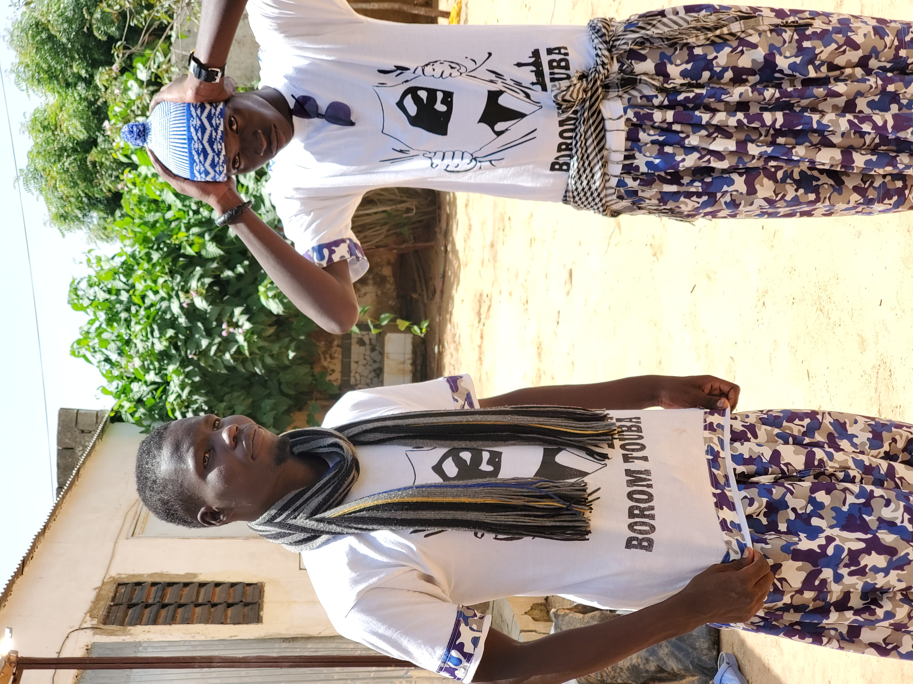

Galerie


Unissons nos cœurs pour le bien
La Fondation Magal Porokhane œuvre pour la solidarité, l'entraide et l'organisation du programme du Magal de Porokhane à travers des actions sociales et humanitaires.
Email : Fondationashabuljanna@gmail.com
Téléphone : +221 761310032